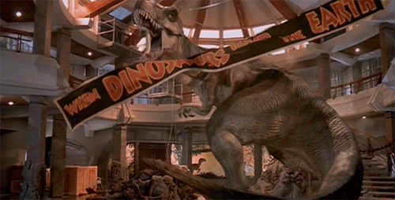
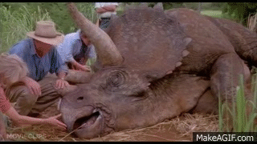
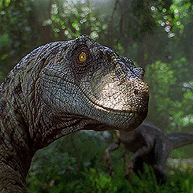

Main Dinosaurs Feature
Tyrannosaurus Rex
Tyrannosaurus Rex or the 'Tyrant Lizard' in Latin is the main antagonist as far as dinosaurs go in all 3 Jurassic Park Movies.

- Height: 21 ft.
- Weight: ~ 11,000 lbs.
- Kill Count: 10
-Fact 1: The Tyrannosaurus Rex actually didn't roar like it did in the movie. The T-Rex actually sounded more like a guttural croak similar to a bullfrog... if the bullfrog was 20+ feet tall.
-Fact: 2 Tyrannosaurus Rex was portrayed to have eyesiight based on movement in the movies. In fact, the T-Rex had impeccable eyesight and would have called Dr. Alan Grant's bluff in the movie.
Triceratops
Triceratops, or 'Three Horned Face' in Latin was the rival of Triceratops in the late Cretaceous Period. In the movie's however, the two never clashed.

- Height: 10 ft.
- Weight: ~ 13,000 lbs.
- Kill Count: 0
-Fact 1: The ginormous skull of Triceratops made up almost 1/3 of its body length.
-Fact 2: Triceratops lived up until the K-T Explosion. The dinosaur went extinct and wtinessed the events during and after the asteroid impact.
Velociraptor
Velociraptor or 'Swift Thief' in latin is the pack hunting dinosaur in the movie series. These packs of vicious dinosaurs are akin to Dan O'Bannon's "Alien" in the

- Height: 6 ft.
- Weight: ~ 400 lbs.
- Kill Count: 10
-Fact 1: The Velociraptor was no NEARLY as big as it's real life counterpart. The Velociraptors paleontologists have uncovered have shown to be 1 1/2 feet tall and weighed in at around 35 pounds.
-Fact: 2Paleontologists still cannot prove that Velociraptors hunted in packs. Although in the movie series this much seems obvious and natural, there is no definitive proof this actually was the case for these prehistoric animals.
Spinosaurus
Spinosaurus, or 'Spine Lizard' in latin is the main dinosaur antagonist in the last iteration of the main Jurassic Park trilogy. She is much bigger and more dangerous than the T-Rex in these films.

- Height: 19 1/12 ft.
- Weight: ~ 19,000 lbs.
- Kill Count: 2
-Fact 1: Yet another Spielberg exxageration on the actual look of the dinosaur. Spinosaurus was mainly quadropedal instead of bipedal.
-Fact 2: Spinosaurus, although having a perceiveed strong bite force probably couldn't have snapped the neck of a Tyrannosaurus Rex like she did in the 3rd film. Although...still pretty badass.